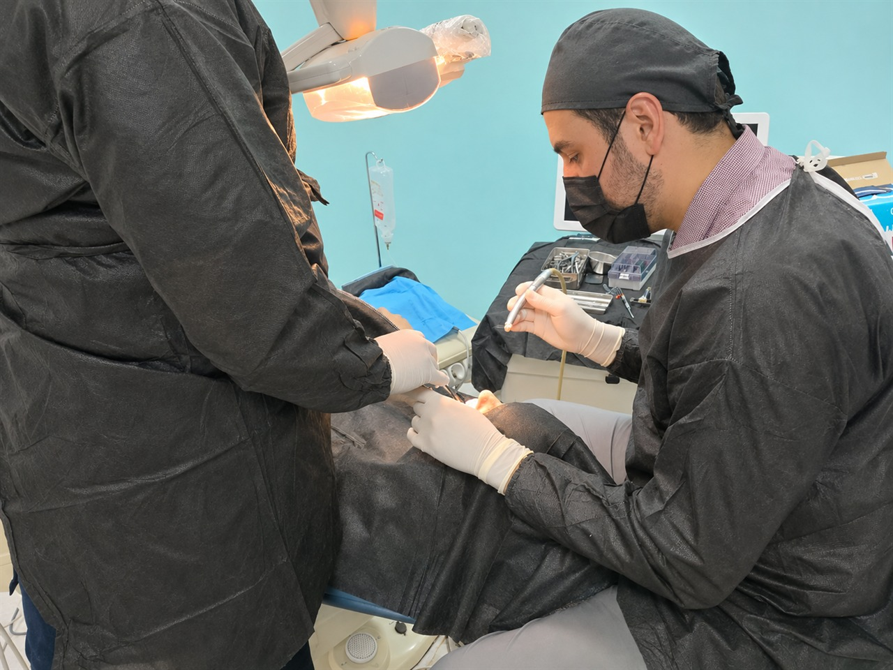
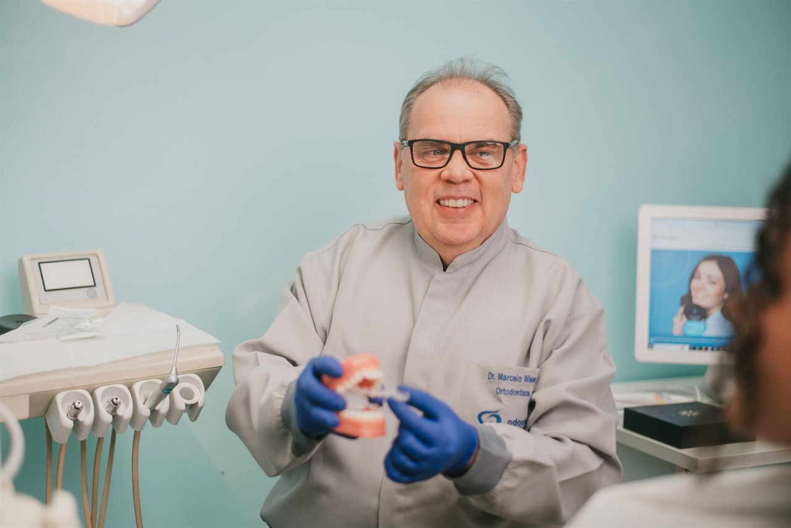
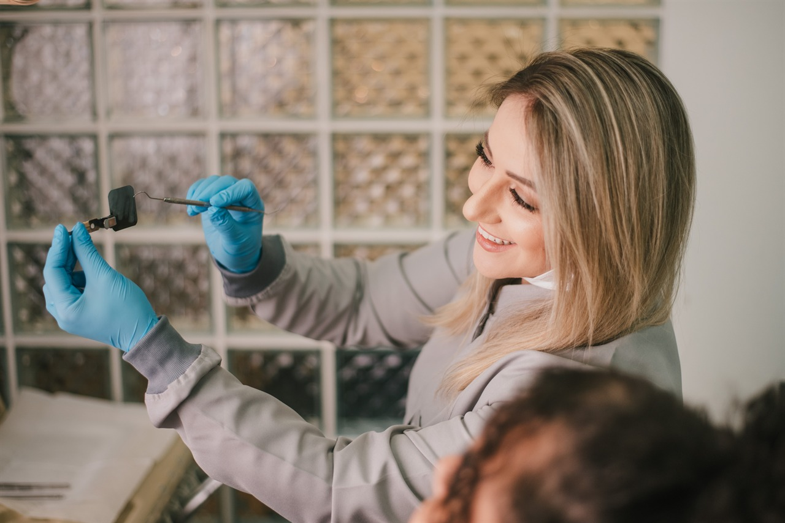
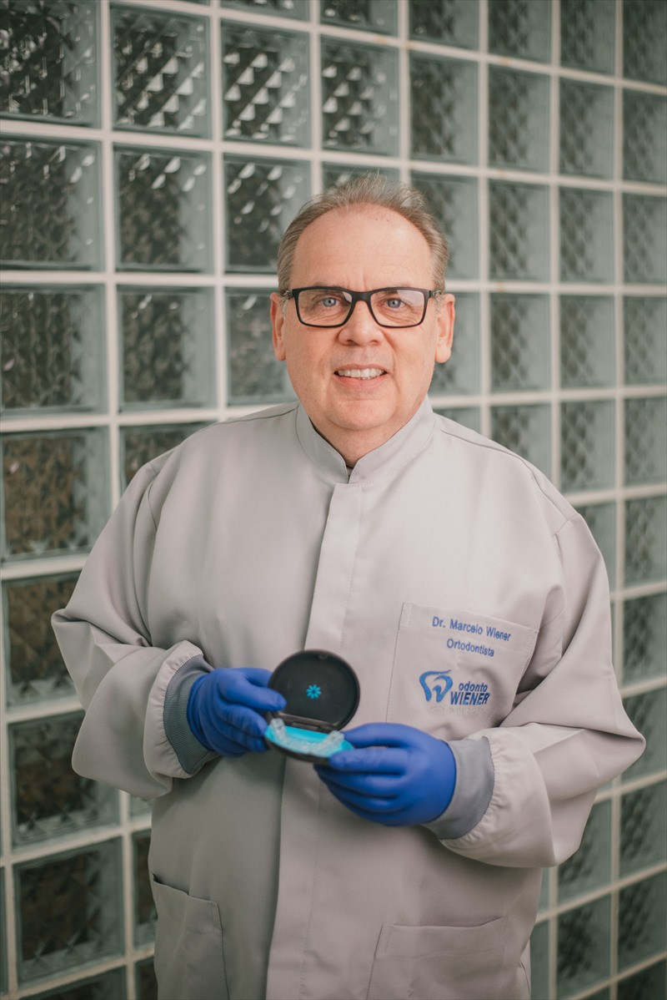
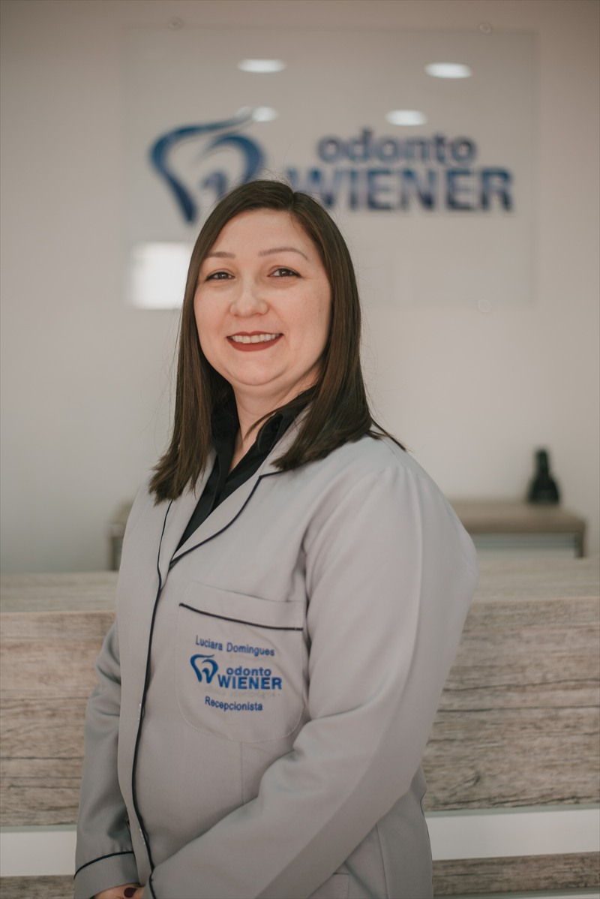

01 Implantes e Cirurgias
Tratamentos com implantes dentários e procedimentos cirúrgicos, planejados de acordo com as necessidades de cada paciente.
Conversar sobre o tratamento ↗15 ANOS DE HISTÓRIA EM PELOTAS
Uma clínica familiar em Pelotas. Conheça nossa história, nossa equipe e os cuidados que oferecemos.
Agendar consulta Conheça os tratamentos ↓.jpeg)
TRATAMENTOS
Oferecemos implantes e cirurgias, próteses, ortodontia geral e tratamento de canal. Converse com a equipe para entender as opções de cuidado.

Tratamentos com implantes dentários e procedimentos cirúrgicos, planejados de acordo com as necessidades de cada paciente.
Conversar sobre o tratamento ↗
Opções de próteses fixas e removíveis e tratamentos ortodônticos para diferentes necessidades.
Conversar sobre o tratamento ↗
Tratamento endodôntico voltado à preservação do dente natural e ao cuidado com sua saúde.
Conversar sobre o tratamento ↗
Use as setas do teclado ou deslize para mudar de fotografia. Home vai à primeira e End à última.
NOSSA HISTÓRIA
Conheça a Odonto Wiener, uma clínica familiar em Pelotas, e as pessoas que fazem parte da nossa história.
QUEM FAZ PARTE
Conheça quem faz parte da história da Odonto Wiener.

Ortodontia • Invisalign Doctor
CRO/RS 12980
Psicologia
CRP/RS 07/41467
Endodontia e Harmonização Facial
CRO/RS 26040

Cirurgia Bucomaxilofacial e Implantodontia
CRO/RS 25036

Recepcionista
CONTATO E LOCALIZAÇÃO
Fale com a equipe para tirar dúvidas e consultar os horários de atendimento.
Agendar consultaRua Quinze de Novembro, 707, Pelotas, Rio Grande do Sul
MAPA DA LOCALIZAÇÃO
Abrir localização no Google Maps ↗Se o mapa não carregar, use o link acima para consultar o endereço.
.jpeg)